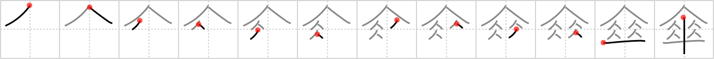

傘
← →
umbrella

Reading:
On-Yomi: サン — Kun-Yomi: かさ
Heisig story:
Umbrella . . . two assembly lines . . . needle.
Koohii stories:
1) [matticus] 29-10-2006(289): There are two assembly lines at the umbrella factory. One is responsible for making the top of the umbrella, and the other for making the handle. The two lines cross at the end, where one man tries frantically to jam the sets of parts together.
2) [kumakuma] 17-6-2008(154): FOUR PERSONS can fit under this UMBRELLA if they are thin as a NEEDLE.
3) [nilfisq] 15-9-2007(40): A pictograph: 4 people sheltering under one big umbrella.
4) [mantixen] 2-9-2008(14): Two couples on a double date pool together ten dollars for a huge umbrella they can all stand under.
5) [Danieru] 15-7-2008(12): Four people under an umbrella is better than ten!